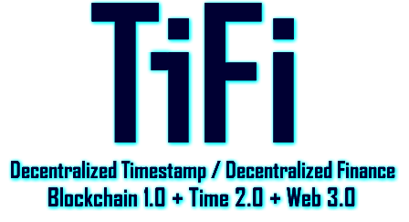
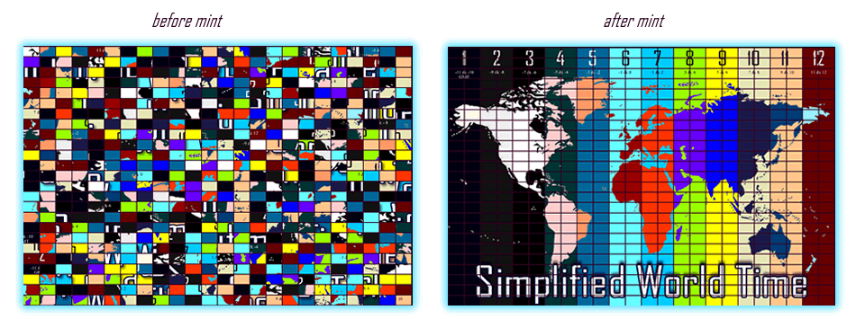

What is this ?

TiFi project represents a visionary combination of Blockchain 1.0, Time 2.0, and Web3 technologies, giving birth to a truly groundbreaking concept. This unique project is the first of its kind, introducing a Web4 initiative dApp that is completely decentralized while embodying the principles and vision of Time 2.0
The Project
The TiFi project introduces 600 NFT Tile Collection, a set of unique digital assets that serve as liquidity providers for the TiFi Liquidity Market Zones.
These NFT tiles represent specific locations on decentralized Map and are distributed across the zones. Each zone has 25 tiles that act as liquidity providers for that zone, with the respective SWT$1/12 Tokens.
Unlocking the Digital Art Revolution
A groundbreaking collection that combines artistry, innovation, and blockchain technology. With a unique approach and a vision for the future, TiFi is revolutionizing the way we experience and collect digital art.
The project unfolds in four exciting phases, each bringing new features and opportunities for collectors and art enthusiasts.
Phase 1:
TiFi project involves the minting process of the first 600 tiles that make up the decentralized world map. During this phase, each tile is assigned a random order image number. Although the initial placement of the images may appear random, the metadata associated with each tile contains the necessary information to determine its actual position on the map.

In addition to owning a unique NFT tile in the TiFi Market Zone project, holders will also be granted a blog page within the decentralized map. This blog page serves as a platform for holders to publish the metadata of their NFTs, which includes important information such as the gift NFT from the Horoscope Calendar, a random year number from the Cyclezero period, a Timeverse format of a random date, and the real position of the tile in the map.

The purpose of publishing this metadata on the blog page is to facilitate the correct arrangement of the map during the second phase of the project. As mentioned earlier, the initial distribution of the NFT tiles is randomized, with specific numbers assigned to them during the minting process. However, the actual position of each tile on the map is stored in the metadata.
The blog pages provided to NFT holders in the TiFi Market Zone project serve as a means to share and publish the metadata of their NFTs.
Click on different tiles and open the corresponding personal blogs of the tile holders. These blogs are an essential part of the TiFi community, allowing users to share their metadata and additional information related to their tiles.
Phase 2:
Marks the second drop of the Tiles with the real metadata of each tile and the addition of Zone SWT1/12 metadata in each image. The minting process incorporates the native Blockchain of each zone.
Setting voting system to assign SWT to Blockchains. This phase further enriches the TiFi NFT experience, allowing project to start and collectors to explore the diverse landscapes of different blockchain ecosystems.
Phase 3:
The third phase involves injecting liquidity into the pools and setting up SWT tokens. This activates the TiFi Liquidity Market Zone, allowing users to buy, sell, and trade liquidity tokens for different DeFi protocols using the NFT tiles as liquidity providers. The initial value of each tile is injected into the liquidity pool of the corresponding zone, contributing to its growth and overall value.